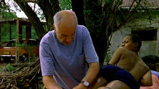

| Long Run. The / B-, A- |
|
Universal/2000/113/ANA 1.85 |
The Long Run opens with stunning black and white slow
motion images of a race run some time in the past complimented by wistful
music and dominated by the sound of heavy breathing. It's very effective.
While the film is enjoyable, the
possibilities suggested by the poetic opening are never quite realized.
Training for the Comrades Marathon, a grueling 90 kilometer race
that captures the imagination of many
South Africans, is the focus of The Long Run. Berry Bohmer is a long time running coach who works as a
foreman at a major brick factory. The German immigrant coaches workers at
the factory with the ultimate goal of participating in the great annual
race.
 |
|
Compulsive training. ©Universal |
When Berry gets laid off from his job it also means he is no
longer coaching the runners who are to compete in the Comrades Marathon.
It's a severe blow. But as luck would have it, Berry discovers another
runner, a lonely women refugee who uses running as a connection to her inner
self. Berry watches her from a distance, studies her and then convinces her
to train under his guidance for the Comrades.
Berry's people skills are questionable at best. Berry loses his job, loses
his runners, his house, his new runner and sure enough in the predicable arc of
the film, he and his new find Christine inevitably return to each other.
It's the classic structure of a film about athletic training and
competition: discovery, training, falling out, and reunion. The film slows
down some just when the engine gets revved up. It's ironic that a film about
long distance runners should have a slightly flabby mid-section. Runners
shouldn't have any fat on them. In the end, The Long Run runs a predicable race.
There are nice small moments in the film, like Berry's
expectant chef hovering over Christine. The South African countryside is magnificently filmed. There's
one scene of cumulous clouds on a blue sky that could be a perfect painting.
The training sequences are more about building a relationship between the
characters. After all, how many times can Berry call out "Faster!" Stahl
gives the character of Berry an interesting depth.
Armin Mueller-Stahl has visited South African
training territory before in The Power of One, helping to shape a young
boxer. He's convincing as Berry, but his performance doesn't quite go the
last mile. Christine is played by Nthati Moshesh with innocence and
strength. Paterson Joseph is Gasa, the man who takes over Berry's job, and
he's a bit too smug and smarmy to create a real character. There's a very
earthy performance from Ann-Mart Van Der Merwe as Anna, Berry's daughter,
but there's too little of her.
A beautiful transfer! Color and detail are excellent.
Effectively punchy image. Interesting slightly blown out look at the brick factory site
with dust in the air turning into tightly controlled grain and coating the
entire image. The clothing is
a magnificent explosion of color, tightly controlled throughout. Deep
blacks, fine color range. Very beautiful contrast range. Nice shadow detail
in Berry's study. Every corner of the town is ablaze with
color. Dolby 2.0 surround is open
and clean with excellent matrix. The party scene at Berry's is an
excellent example of the fine ability of the surround to precisely locate
information. Some strange artifacts show up briefly on a black journalist's
jacket. Some slight transition edginess with Berry silhouetted against the
sky. A thoroughly appealing DVD transfer!
Reviewed on a Sharp 9000VX DLP Projector
|
|
|
|

Selections from the
Feature Archive include articles on Akira Kurosawa,
Frank Darabont,
Blonde Bimbos,
Hollywood Street Gangs, or
Vietnam: The Hollywood Pariah, and many
more....
Richard Widmark

Widmark laid claim to some of the best twisted film sensibilities ever
recorded on celluloid. Find out more about his career with a profile and
poster images

The Movie Poster Archive includes extensive poster images from the films of
stars like Susan Hayward, Kirk Douglas, Katharine Hepburn and many more. Our
featured star is
Frank Sinatra.

 Have you visited
Home Theater Talk
lately? One of the friendliest places on the Net for Home Theater and DVD
discussion, you can get help for installation problems or simply share your
opinions with other Vidiots. Have you visited
Home Theater Talk
lately? One of the friendliest places on the Net for Home Theater and DVD
discussion, you can get help for installation problems or simply share your
opinions with other Vidiots.
MRQE
Find reams of movie and DVD reviews at
the Movie Review Query Engine, a index of reviews appearing on the Internet.

Home Vision Cinema
Classic and foreign motion
pictures on VHS tape. The title selection is excellent and informative
essays are provided for many of the films.

To Kill a Mockingbird (SE)/ A,A

From the great novel by Harper Lee, this tale of growing up in
the 1930s South is splendidly evocative of place and period. Gregory Peck is
splendid. Direction impeccable.
|